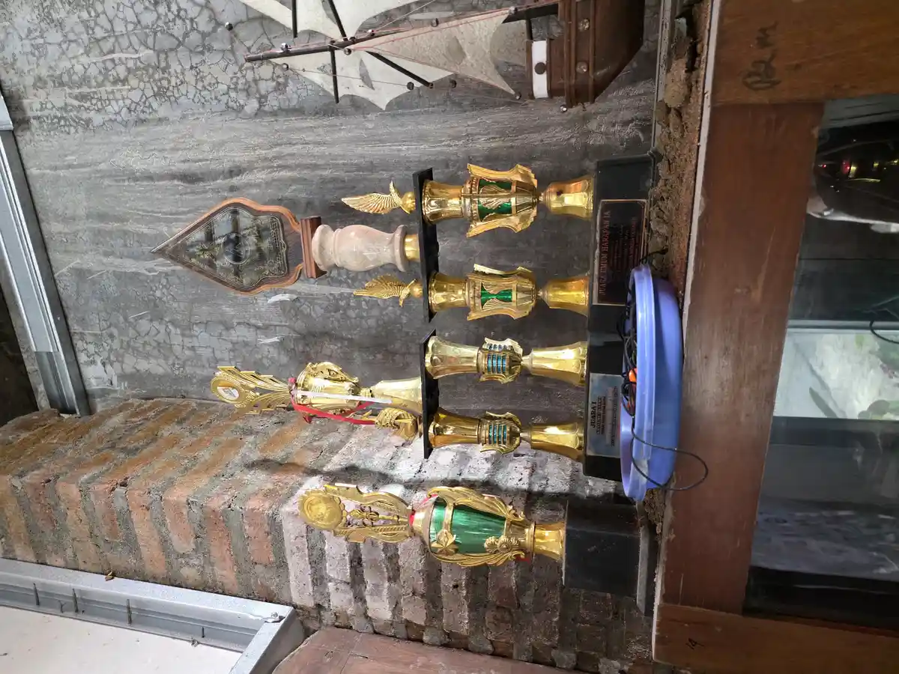

ai chatbot untuk anak berkebutuhan khusus dapat menjadi alat bantu belajar, komunikasi, dan latihan keterampilan jika dipilih sesuai usia serta digunakan bersama orang dewasa. Namun, jawaban yang terdengar meyakinkan belum tentu benar, aman, atau cocok dengan kebutuhan individual anak. Dalam panduan ini, saya membahas manfaat yang realistis, risiko yang perlu diwaspadai, cara memilih layanan, dan langkah praktik yang menjaga peran utama orang tua, guru, serta tenaga profesional.
Chatbot AI adalah program percakapan yang menerima pertanyaan lalu menghasilkan jawaban dalam bentuk teks, suara, atau media lain. Chatbot generatif dapat menyederhanakan bacaan, membuat contoh soal, menyusun cerita sosial, atau berlatih dialog. Kemampuan itu relevan dengan persiapan ABK menghadapi era AI, tetapi bukan berarti satu alat sesuai untuk setiap anak. Profil komunikasi, kemampuan membaca, regulasi sensori, usia perkembangan, dan tujuan dalam program pembelajaran individual perlu menjadi dasar keputusan.

Daftar Isi
- Apa Itu AI Chatbot untuk Anak Berkebutuhan Khusus?
- Manfaat yang Realistis untuk Belajar dan Komunikasi
- Risiko Privasi, Informasi, dan Ketergantungan
- Cara Memilih Chatbot yang Lebih Aman dan Aksesibel
- Panduan Praktik di Rumah dan Sekolah
- Checklist Evaluasi dan Kapan Harus Berhenti
- FAQ AI Chatbot untuk Anak Berkebutuhan Khusus
Apa Itu AI Chatbot untuk Anak Berkebutuhan Khusus?
Istilah ini bukan nama terapi dan bukan kategori alat medis. Maknanya adalah chatbot yang dipakai untuk mendukung tujuan tertentu bagi anak dengan kebutuhan belajar, komunikasi, sensori, fisik, intelektual, atau sosial emosional yang beragam. Chatbot umum dapat membantu pendamping menyiapkan materi. Chatbot pendidikan khusus biasanya memiliki alur terbatas, konten yang dikurasi, atau fitur aksesibilitas. Perbedaan ini penting karena sistem percakapan terbuka lebih sulit diprediksi daripada alat yang hanya menjalankan tugas terarah.
Contoh penggunaan yang cukup terukur ialah meminta tiga soal matematika dengan instruksi satu kalimat, mengubah paragraf menjadi daftar langkah, membuat dialog untuk membeli makanan, atau menghasilkan pilihan kosakata. Untuk anak yang sedang mengembangkan komunikasi, hasil chatbot dapat menjadi bahan latihan bersama guru atau terapis wicara. Chatbot tidak otomatis menjadi perangkat komunikasi augmentatif dan alternatif. Jika anak menggunakan AAC, setiap perubahan sistem komunikasi sebaiknya dibahas dengan profesional yang mengenal anak.
Fakultas Ilmu Pendidikan UNESA menyoroti potensi AI untuk penjelasan bertahap, pembelajaran yang lebih personal, serta dukungan bagi guru dan orang tua. Sumber yang sama juga mengingatkan soal kesenjangan akses, ketergantungan, konteks bahasa dan budaya, serta keamanan data. Jadi, nilai sebuah chatbot tidak diukur dari kecanggihannya, melainkan dari kesesuaian dengan tujuan pendidikan dan dampaknya pada anak.
Prinsip Dasar
Gunakan chatbot sebagai alat bantu yang diawasi, bukan teman pengganti, pemberi diagnosis, terapis, atau penentu keputusan. Tujuan manusia harus selalu datang lebih dahulu daripada fitur teknologi.
Manfaat yang Realistis untuk Belajar dan Komunikasi
Materi lebih mudah disesuaikan. Pendamping dapat meminta versi bacaan dengan kalimat pendek, satu instruksi per langkah, contoh konkret, atau tingkat kesulitan berbeda. Anak dengan kesulitan memusatkan perhatian mungkin terbantu oleh jawaban ringkas. Anak yang cepat menguasai materi dapat menerima latihan lanjutan. Personalisasi ini tetap perlu diperiksa karena chatbot tidak mengetahui kemampuan anak hanya dari satu percakapan.
Latihan dapat diulang tanpa terburu-buru. Chatbot bisa menampilkan contoh percakapan yang sama beberapa kali, membuat variasi situasi, atau memberi pertanyaan satu per satu. Penelitian Stanford tentang chatbot khusus bernama Noora menunjukkan potensi latihan komunikasi sosial bagi individu autistik. Dalam uji acak kecil dengan 30 peserta, latihan terstruktur selama empat minggu berkaitan dengan peningkatan respons empatik dalam percakapan manusia. Stanford HAI juga menjelaskan bahwa materi pemicu dalam sistem itu telah dikurasi, sehingga hasil tersebut tidak boleh digeneralisasi ke semua chatbot publik.
Pendamping memperoleh bahan awal. Guru dapat meminta contoh aktivitas, variasi soal, atau draf cerita sosial, lalu mengeditnya sesuai budaya, bahasa, dan target anak. Orang tua dapat meminta ide percakapan sebelum menjalankan jadwal visual anak autis. Cara ini menghemat waktu persiapan, tetapi hasil AI harus menjadi draf, bukan materi final tanpa pemeriksaan.
Fitur multimodal dapat memperluas akses. Sebagian layanan mendukung dikte suara, pembacaan teks, pengubahan tingkat bahasa, atau respons bergambar. Fitur tersebut mungkin membantu pengguna dengan hambatan membaca, menulis, melihat, atau motorik. Tetap uji bersama anak. Fitur yang secara teknis tersedia belum tentu mudah digunakan, akurat membaca ucapan anak, atau nyaman secara sensori.
Manfaat terbaik muncul ketika keberhasilan didefinisikan secara nyata, misalnya anak memahami tiga langkah, mampu menjawab dua pertanyaan, atau berlatih meminta bantuan. Jangan memakai jumlah pesan, durasi layar, atau pujian dari bot sebagai ukuran perkembangan. Bandingkan kemampuan anak di luar layar dan catat apakah keterampilan berpindah ke interaksi sehari-hari.
Risiko Privasi, Informasi, dan Ketergantungan
Jawaban salah dan bias. Chatbot dapat membuat fakta, sumber, kutipan, atau saran yang tidak tepat. Bahasa yang lancar membuat kesalahan sulit dikenali, terutama bagi anak yang cenderung memahami pernyataan secara literal. Model juga dapat membawa bias dari data pelatihan dan memberi respons yang tidak sensitif terhadap disabilitas. Karena itu, periksa fakta melalui buku, situs resmi, dan tenaga ahli.
Data pribadi dan sensitif. Percakapan dapat diproses atau disimpan oleh penyedia. Jangan memasukkan nama lengkap, foto, sekolah, alamat, lokasi, diagnosis rinci, hasil asesmen, rekam medis, atau dokumen PPI anak. Profil kebutuhan khusus dapat menjadi informasi sensitif. profil risiko AI generatif NIST mencantumkan kebocoran, inferensi, dan pengungkapan data sensitif sebagai risiko yang perlu dipantau dan dikelola.
Konten yang tidak sesuai dan relasi semu. Chatbot bisa berbicara seolah memiliki perasaan atau selalu memahami pengguna. Anak dapat sulit membedakan simulasi percakapan dari hubungan timbal balik manusia. UNICEF Innocenti menekankan pertanyaan tentang dampak chatbot bernada manusia pada perkembangan, perilaku sosial, dan privasi anak. Hindari aplikasi yang dipasarkan sebagai teman romantis, sahabat rahasia, atau pengganti dukungan manusia.
Ketergantungan dan berkurangnya latihan nyata. Respons instan dapat membuat anak selalu mencari jawaban, validasi, atau ketenangan dari bot. Waktu untuk bermain, bergerak, berbicara dengan keluarga, belajar menunggu, dan menyelesaikan masalah dapat berkurang. Risiko ini lebih besar ketika chatbot dirancang untuk mempertahankan interaksi. Gunakan sesi terbatas dengan akhir jelas, lalu praktikkan keterampilan bersama manusia.
Saran kesehatan atau krisis yang tidak aman. Chatbot umum tidak boleh menjadi tempat diagnosis, konseling krisis, atau keputusan obat. American Psychological Association menyatakan chatbot generatif dan aplikasi wellness tidak memiliki bukti ilmiah serta regulasi yang memadai untuk menggantikan dukungan kesehatan mental profesional. Jika anak menyebut ingin menyakiti diri, mengalami kekerasan, atau berada dalam bahaya, hentikan percakapan digital dan segera hubungi orang dewasa tepercaya, layanan profesional, atau layanan darurat setempat.
Cara Memilih Chatbot yang Lebih Aman dan Aksesibel
Pertama, baca syarat usia. Jangan membuat umur palsu agar anak dapat membuka akun. panduan UNESCO tentang AI generatif dalam pendidikan mendorong batas usia untuk percakapan mandiri, perlindungan privasi, validasi etis, dan desain yang sesuai usia. Jika anak belum memenuhi syarat layanan, orang dewasa dapat memakai alat pada akunnya sendiri untuk menyiapkan bahan, lalu menyampaikan materi di luar chatbot.
Kedua, periksa kebijakan data dengan pertanyaan praktis: apakah percakapan dipakai untuk melatih model, dapatkah riwayat dihapus, tersedia kontrol orang tua, dan adakah pelaporan konten? Pilih pengaturan privasi paling ketat. Jangan menganggap mode pendidikan pasti bebas risiko. Sekolah perlu menilai kontrak penyedia, akses staf, masa penyimpanan, dan prosedur insiden sebelum meminta siswa memakai platform.
Ketiga, uji aksesibilitas. Coba navigasi papan ketik, pembaca layar, ukuran teks, kontras, input suara, kecepatan audio, tombol berhenti, dan bahasa Indonesia. Libatkan anak dalam evaluasi sesuai kemampuan komunikasinya. Tanda alat cocok bukan hanya anak mampu membukanya, tetapi ia dapat memahami tujuan, mengendalikan interaksi, meminta jeda, dan keluar dengan mudah.
Keempat, pilih alat bertugas sempit daripada chatbot pendamping terbuka. Sistem untuk meringkas bacaan atau latihan kosakata lebih mudah diawasi daripada bot yang mengajak percakapan pribadi tanpa batas. UNICEF menyediakan panduan implementasi chatbot yang lebih aman dengan pendekatan safeguarding bagi pengguna rentan. Untuk sekolah, dokumentasikan siapa yang menyetujui alat, tujuan, data yang boleh dimasukkan, dan tindakan jika terjadi keluaran berbahaya.
Panduan Praktik di Rumah dan Sekolah
Mulailah dari satu tujuan kecil. Contohnya, anak akan berlatih memilih sapaan yang sesuai dalam tiga situasi. Orang dewasa membuka sesi, menjelaskan bahwa AI adalah program yang bisa salah, lalu memasukkan prompt tanpa data identitas. Setelah bot memberi contoh, pendamping membaca hasil, membuang bagian yang tidak sesuai, dan mempraktikkannya melalui permainan peran. Akhiri dengan menanyakan apa yang dipahami anak.
Prompt yang baik menyebut tugas, tingkat bahasa, format, batasan, dan proses pemeriksaan. Contoh: "Buat tiga contoh dialog meminta bantuan untuk anak usia sekolah. Gunakan kalimat maksimal delapan kata, nada sopan, dan satu situasi per contoh. Jangan memberi saran medis." Hindari prompt seperti "Anak saya autis, ini semua datanya, buatkan terapinya." Prompt kedua membagikan data sensitif dan meminta keputusan yang melampaui fungsi chatbot.
Gunakan pola buat, periksa, praktikkan, refleksikan. Buat draf dengan AI. Periksa fakta, bahasa, nilai keluarga, dan kesesuaian kebutuhan. Praktikkan bersama manusia atau benda nyata. Refleksikan apakah anak terbantu, bingung, lelah, atau justru cemas. Pola ini sejalan dengan prinsip pendidikan inklusi karena penyesuaian berpusat pada peserta didik, bukan pada alat.
Guru dan orang tua perlu menyepakati aturan yang sama. Misalnya, chatbot hanya dipakai pada perangkat bersama, percakapan tidak dirahasiakan dari pendamping, dan anak boleh berhenti kapan saja. Ajarkan kalimat sederhana seperti "AI bisa salah", "saya tidak membagikan data pribadi", dan "saya bertanya kepada orang dewasa". Bagi anak yang membutuhkan dukungan visual, aturan dapat dibuat dalam kartu atau langkah bergambar.
Jaga keseimbangan. Setelah chatbot membuat dialog, lakukan percakapan dengan teman atau keluarga. Setelah AI menyederhanakan resep, praktikkan mengukur bahan. Setelah bot membuat urutan kegiatan, gunakan benda nyata. Pendampingan hangat seperti dalam tips mendampingi anak autis tetap lebih penting daripada kecepatan respons teknologi.
Checklist Evaluasi dan Kapan Harus Berhenti
Sebelum Sesi
- Tujuan belajar dapat dijelaskan dalam satu kalimat.
- Usia dan izin penggunaan sesuai aturan platform serta sekolah.
- Tidak ada data identitas, diagnosis rinci, foto, atau dokumen anak.
- Orang dewasa telah mencoba prompt dan memeriksa respons awal.
- Durasi, tanda selesai, serta kegiatan setelah layar sudah jelas.
Sesudah Sesi
- Periksa apakah anak memahami bahwa chatbot bukan manusia.
- Catat tujuan yang tercapai, bukan hanya lamanya penggunaan.
- Tanyakan apakah ada jawaban yang membuat anak bingung atau tidak nyaman.
- Hapus percakapan sensitif sesuai pengaturan yang tersedia.
- Praktikkan kembali keterampilan dalam situasi nyata.
Hentikan penggunaan bila anak menjadi sangat cemas, sulit berhenti, merahasiakan percakapan, mempercayai bot lebih daripada orang terdekat, menerima konten seksual atau kekerasan, atau mengikuti saran berbahaya. Berhenti juga bila alat berulang kali salah memahami komunikasi anak atau menghambat penggunaan AAC yang sudah efektif. Laporkan konten bermasalah kepada penyedia dan sekolah bila digunakan dalam program pendidikan.
Kesimpulan
AI chatbot dapat membantu menyiapkan materi yang lebih sederhana, memberi latihan berulang, dan membuka cara akses baru. Manfaat itu tidak menghapus risiko jawaban salah, bias, privasi, konten tidak pantas, serta ketergantungan emosional. Saya menyarankan prinsip sederhana: tujuan terbatas, data minimal, pendampingan aktif, hasil selalu diperiksa, dan keterampilan selalu dibawa kembali ke dunia nyata. Keputusan pendidikan atau kesehatan tetap berada pada anak, keluarga, guru, dan profesional yang memahami konteksnya.
FAQ AI Chatbot untuk Anak Berkebutuhan Khusus
1. Apakah AI chatbot aman untuk anak berkebutuhan khusus?
Keamanannya bergantung pada usia, kebutuhan anak, fitur perlindungan, kebijakan data, dan pendampingan. Gunakan layanan sesuai batas usia, matikan penyimpanan data jika tersedia, jangan masukkan data pribadi, dan dampingi percakapan anak.
2. Apakah chatbot AI dapat menggantikan guru atau terapis?
Tidak. Chatbot dapat membantu latihan, menyederhanakan materi, atau menghasilkan ide kegiatan, tetapi tidak dapat melakukan asesmen profesional, memahami seluruh konteks anak, atau menggantikan hubungan manusia.
3. Pada usia berapa anak boleh menggunakan chatbot AI?
Ikuti syarat usia platform dan kebijakan sekolah. UNESCO merekomendasikan batas usia untuk percakapan mandiri dengan platform AI generatif. Anak yang belum memenuhi batas tersebut sebaiknya tidak memiliki akun atau menggunakan chatbot sendiri.
4. Data apa yang tidak boleh dimasukkan ke chatbot?
Jangan masukkan nama lengkap, alamat, nomor telepon, nama sekolah, foto, lokasi, diagnosis rinci, rekam medis, hasil asesmen, dokumen PPI, kata sandi, atau cerita sensitif yang dapat mengidentifikasi anak.
5. Apa contoh penggunaan chatbot AI untuk belajar?
Pendamping dapat meminta cerita sosial singkat, soal bertahap, ringkasan bacaan, contoh dialog, atau instruksi kegiatan dalam kalimat sederhana. Semua keluaran perlu diperiksa sebelum diberikan kepada anak.
6. Bagaimana jika jawaban AI salah atau tidak pantas?
Hentikan sesi, simpan catatan seperlunya tanpa menyebarkan data anak, laporkan melalui fitur platform, lalu luruskan informasi dengan sumber tepercaya. Untuk topik kesehatan, keselamatan, dan krisis, hubungi manusia yang kompeten.
7. Berapa lama sesi chatbot yang ideal?
Tidak ada durasi tunggal untuk semua anak. Mulai dengan satu tujuan dan sesi singkat, misalnya lima sampai sepuluh menit, lalu amati fokus, kelelahan, kecemasan, dan regulasi sensori anak. Durasi perlu disesuaikan secara individual.
Baca Juga Artikel Terkait:
Sumber Resmi & Referensi Authoritative
Panduan ini disusun dengan memeriksa sumber pendidikan, perlindungan anak, psikologi, dan tata kelola AI berikut:
- UNESCO: Guidance for Generative AI in Education and Research
- UNICEF Innocenti: Generative AI, Risks and Opportunities for Children
- UNICEF: Safer Chatbots Implementation Guide
- Stanford HAI: AI Social Coach for People with Autism
- American Psychological Association: Health Advisory on AI Chatbots
- NIST: Artificial Intelligence Risk Management Framework, Generative AI Profile
- FIP UNESA: Peran AI dalam Pendidikan Inklusif untuk ABK
Disclaimer Medis & Pendidikan: Artikel ini bersifat edukasi umum dan bukan pengganti konsultasi profesional. Untuk diagnosis, asesmen, terapi, kesehatan mental, atau penanganan anak berkebutuhan khusus, konsultasikan langsung dengan dokter anak, psikolog perkembangan, terapis, atau tenaga pendidikan khusus yang berlisensi.